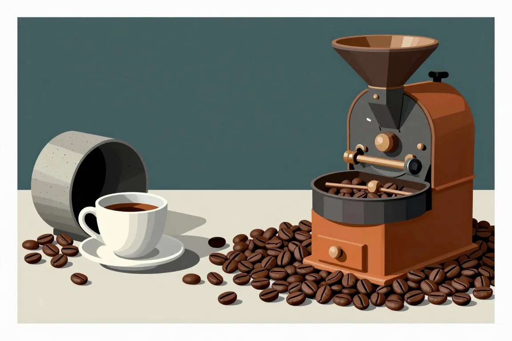

Изображение со странным кадрированием, диковинным вырезанным объектом или спокойной странной подписью без ясной развязки. Выросло из групп Facebook и Reddit в 2016 году и часто нарочно нарушает старые правила имидж-макро.

Главная идея
Бросьте структуру шутки: пусть странная картинка и спокойная подпись создают настроение без ответа.
Принципы дизайна
Составляйте 2–4 слоя: плоский или фотографический фон, вырезанная фигура и один странный предмет.
Берите спокойную подпись из 1–6 слов простым гротеском 24–36px, вне привычных позиций сверху и снизу.
Ставьте вырезку с видимым грубым краем 1–2px, масштабированную на 20–400% от истинного размера.
Берите ограниченную странную пару цветов: плоский бирюзовый (#2E9C9A) и тусклый оранжевый (#E08A3C) на сером.
Добавляйте зерно 3–8% и одно мягкое свечение, без чистого грейда.
Оставляйте 30–50% холста пустыми, чтобы у странного предмета был воздух.
Повторяйте один предмет или имя в серии, чтобы выстроить частную шутку.